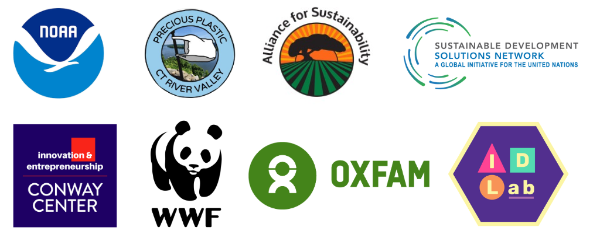

About
A Bio in 10 seconds
Recent graduate of Smith College with dual majors in Computer Science and Environmental Science and Policy.
Passionate about sustainable design and social technology.
Currently working in Washington, D.C. on environmental policy.
......
A Bio in 1 min
How can we co-create a society that is ecologically sound, socially just, and economically
viable?
I am passionate about innovating at the intersection of social technology and sustainable development
for purposeful design. Inspired by my family’s organic farm for young adults with disabilities,
I studied
Environmental Science and Policy
and Computer Science
at Smith College. In embracing
an identity as a sustainable HCI designer, I am driven by critically engaging with design in
service of societal challenges.
I have worked with various nonprofits and social innovation organizations, developing my experiences in
social innovation, design, and strategic communications. Some highlighted roles include Oxfam,
the World Wildlife Fund, and the United Nations Sustainable Development Solutions Network.
Currently, I work on environmental policy in Washington, D.C. I also serve as a Board member of the Alliance for Sustainability
and conduct
ethnographic research exploring youth digital rights.

A Bio in 5 minutes
Everything from my family farm to my art background, visit my 5 minutes page